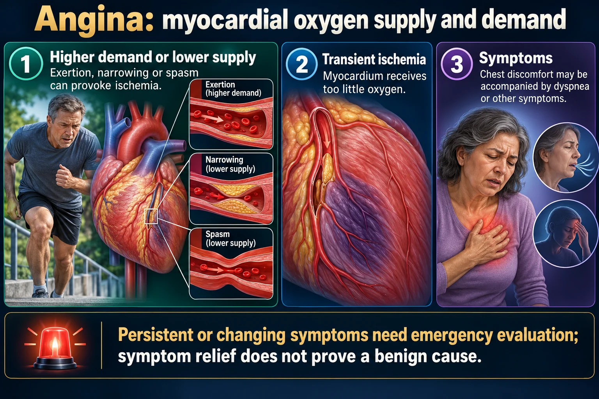

Prinzmetal / vasospastic angina — the artery clenches
Every other angina is a plumbing problem. This one is a muscle cramp. The coronary artery goes into SPASM — the smooth muscle in the wall clamps down and shuts off flow — even in an artery with little or no plaque. It strikes at REST, classically at night or in the early morning, and it opens right back up with nitrates and calcium channel blockers.
📄 Simple Nursing original — opens in Drive →
Same cross-section you learned on NG-145 — but this time the lumen closes because the wall squeezes, not because a plaque grew.

Persistent or changing symptoms need emergency evaluation; symptom relief does not prove a benign cause.
Higher demand or lower supply
Exertion, narrowing or spasm can provoke ischemia.
Transient ischemia
Myocardium receives too little oxygen.
Symptoms
Chest discomfort may be accompanied by dyspnea or other symptoms.
Stable pattern
Predictable exertional symptoms usually improve with rest or prescribed treatment.
Unstable pattern
New, worsening or rest symptoms may represent acute coronary syndrome.
Vasospasm
Transient coronary constriction may cause episodes at rest.
Smoking is the standout risk factor — variant angina often shows up in a younger client who smokes and who may have few traditional cholesterol risk factors.
Answer first: Do NOT give a beta blocker for cocaine-induced chest pain.
This table is the whole exam question. Three anginas, three different stories — and only one of them is a spasm.
| 🙂 STABLE angina “safer” |
😰 UNSTABLE angina “unsafe” |
🌀 VARIANT / Prinzmetal vasospastic |
|
|---|---|---|---|
| Cause | Fixed plaque — stable, thick-capped, narrows the lumen ~70%+ | Plaque rupture + partial clot — the cap tore but the artery isn't fully shut | SPASM of the smooth muscle — plaque may be minimal or absent |
| What brings it on | Exertion or emotion — a predictable amount of activity, every time | Less and less exertion — now happens at rest, new, worsening, longer | At REST — not related to exertion. Cold, stress, smoking, cocaine, hyperventilation |
| Time of day | Anytime she exerts | Anytime — increasingly unpredictable | Classically at NIGHT or EARLY MORNING — often wakes her from sleep, same time most nights |
| Duration | 3–5 min, usually under 15 min | Longer, >20 min is worrying | Usually 5–15 min, may come in clusters of attacks |
| Relieved by | REST and/or nitroglycerin — reliably | NOT reliably relieved by rest or nitro → treat as ACS | Nitroglycerin — fast. Rest alone doesn't fix it because rest didn't cause it |
| EKG during pain | ST depression (subendocardial), resolves with rest | ST depression and/or T-wave inversion — may be normal | TRANSIENT ST ELEVATION that resolves completely when the spasm breaks — looks like a STEMI that goes away |
| Troponin | ❌ Negative | ❌ Negative (positive = it's an NSTEMI now) | ❌ Usually negative — positive only if a long spasm actually infarcted muscle |
| Typical client | Older, classic CAD risk profile | Known CAD, now escalating | Younger, often a smoker, may have few cholesterol risk factors; more common in women in some populations |
| First-line drug | Beta blocker + nitrates, statin, aspirin | ACS protocol: aspirin, antiplatelet, anticoagulant, nitrate, cath | CALCIUM CHANNEL BLOCKERS (prevention) + nitrates. Avoid nonselective beta blockers |
| Danger | Progresses to unstable over time | One step from MI — this is ACS | Can still cause dysrhythmias, MI or sudden death if the spasm is long — don't dismiss it |
The hard part is that everything is normal between attacks — you have to catch the EKG during the pain.
NCLEX TIP ST elevation that resolves completely and a negative troponin = think spasm. A true STEMI's ST elevation does not simply melt away, and its troponin rises. But you never assume — every ST elevation is treated as a STEMI until the picture proves otherwise.
Answer first: variant angina is usually benign with treatment — but a prolonged spasm can still cause real damage.
Two drug classes make the artery relax, one drug class can make it worse, and one habit undoes everything.
amlodipine, diltiazem, verapamil, nifedipine
Block the calcium the smooth muscle needs to contract → the artery can't clamp. This is the prevention drug — scheduled, daily, often dosed to cover the nighttime hours.
Watch: hypotension, headache, flushing, peripheral edema; diltiazem & verapamil also slow HR — hold parameters per order. Verapamil → constipation.
SL nitroglycerin for an attack; long-acting isosorbide for prevention
Donate nitric oxide → immediate vasodilation. Relief is fast, which is itself a diagnostic clue.
Watch: headache (expected), orthostatic hypotension — sit down first. Never with PDE-5 “-afil” drugs.
Blocking beta-2 leaves alpha vasoconstriction unopposed → the spasm can get worse. Same logic as cocaine chest pain.
EXAM TIP "Which order does the nurse question?" — a nonselective beta blocker (e.g. propranolol) prescribed for vasospastic angina.
Also on board: aspirin is used cautiously here (high doses can inhibit protective prostacyclin), a statin if there's any coexisting atherosclerosis, and treating any coexisting CAD as usual. Stents and bypass do NOT fix spasm — you cannot stent a muscle cramp; the artery can spasm right next to the stent.
These newly drawn concept diagrams consolidate the retired illustration sets. The accompanying study notes and original handout links remain on this page.